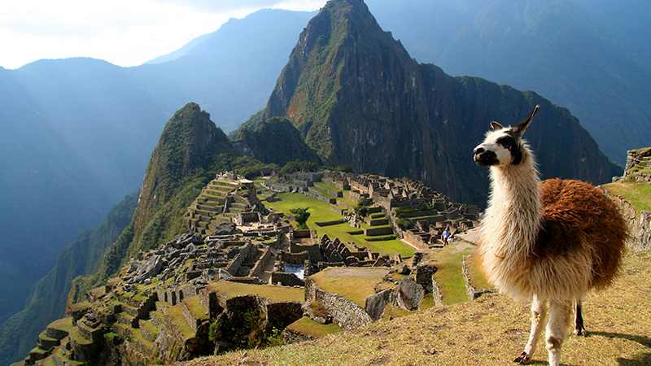
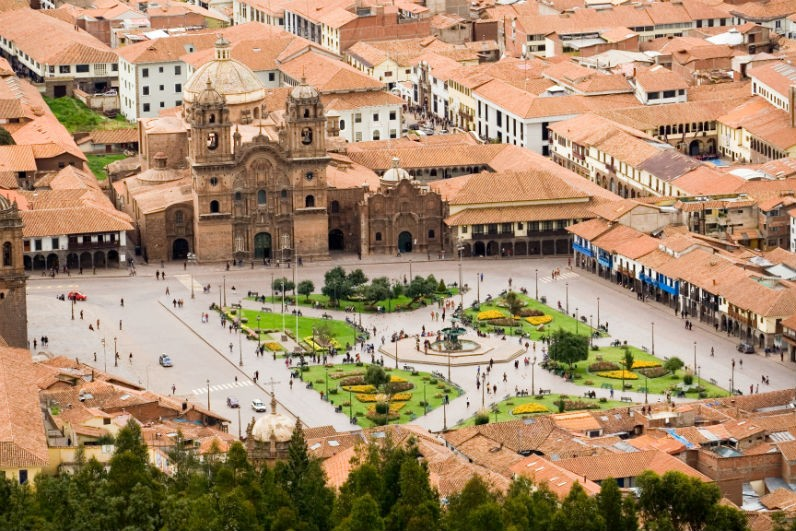
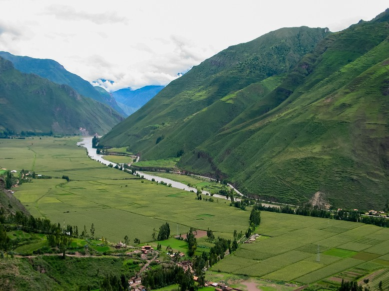

Postagem mais recente
Peru

O Peru é um país realmente incrível e aqui explicarei o porquê você deve escolhê-lo como destino para sua próxima viagem internacional. O Peru tem opções para todos os gostos e bolsos e durante todo o ano há vantagens em se visitar o antigo país dos Incas.
Quer saber o que fazer no Peru? Pois bem mochileiro, saiba que o país é repleto de destinos fascinantes e surpreendentes de norte a sul, cada qual com paisagens de tirar o fôlego, histórias milenares, culturas belíssimas e tradicionais, uma gastronomia incomparável e aventuras capazes de marcar uma vida inteira. Como especialista no turismo andino e também apaixonado por cada canto desse país incrível, resolvi fazer um pequeno resumo sobre o que fazer no Peru e quais destinos visitar na sua tão sonhada trip por lá. Vamos conferir?
Machu Picchu

Claro que a primeira dica sobre o que fazer no Peru não poderia ser diferente. Afinal, as ruínas incas de Machu Picchu são o principal cartão postal do país e um dos destinos mais cobiçados do mundo. Não é pra pouco!
O monumento é reconhecido como uma das 7 maravilhas do mundo e, além de toda a sua beleza arquitetônica e histórica, o lugar parece emanar uma energia indescritível, que mexe com quem pisa nessa terra sagrada.
Não deixe de visitar o Templo do Sol, das Três Janelas e o Setor Nobre da cidadela. Se tiver disposição e quiser adicionar uma pitada de adrenalina no passeio, inclua a trilha de Wayna Picchu no seu pacote também. Ah, e não se esqueça de levar o passaporte para ganhar o carimbo especial de Machu Picchu na entrada do parque.
Cusco

O berço da civilização inca é também a porta de entrada para a sua aventura em Machu Picchu. Afinal, é em Cusco que tudo começa e a cidade é o ponto de partida para os principais passeios na região.
Entre os atrativos imperdíveis, não deixe de fazer o tour arqueológico por Cusco, passando por incríveis ruínas e sítios milenares, como a Fortaleza de Saqsayhuaman, o “labirinto” de Qenqo e local dos banhos sagrados incas chamado Tambomachay.
Na Plaza de Armas, epicentro da cidade, você verá toda a influência da colonização espanhola nos casarões e na sua imensa catedral, além de encontrar bons restaurantes, bares, lojas e galerias de todos os tipos, bolsos e gostos.
Vale Sagrado dos Incas

Outra dica imperdível para quem busca o que fazer no Peru é visitar o fantástico e místico Vale Sagrado dos Incas, especialmente em uma primeira viagem ao país. Afinal, toda a região faz parte do trajeto clássico entre Cusco e Machu Picchu e esconde verdadeiros tesouros históricos e culturais dos Andes.
Entre as principais atrações do Vale Sagrado, vale destacar a feira de artesanato de Pisac, o povoado de Ollantaytambo e a beleza natural de Aguas Calientes.